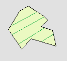

Zrób szkic:

Podaj opis:
Promień: [m]
Opcje:

Wirtualna wycieczka:


Bazylika Mniejsza pw. św. Jakuba i św. Agnieszki
Górująca nad rynkiem i miastem Bazylika Mniejsza św. Jakuba i św. Agnieszki to obecnie jedna z najcenniejszych budowli gotyckich na Opolszczyźnie. W świątyni pochowano wielu biskupów wrocławskich, upamiętniają to wspaniałe sarkofagi i tablice nagrobne.